Change analysis for Colombia for PRIMAP-hist v2.8_final compared to
v2.7_final
This changelog is published under the creative commons non-commercial
share alike license. For more information see creativecommons.org.
Overview over
emissions by sector and gas
The following figures show the aggregate national total emissions
excluding LULUCF AR6GWP100 for the country reported priority scenario.
The dotted lines show the v2.7_final data.
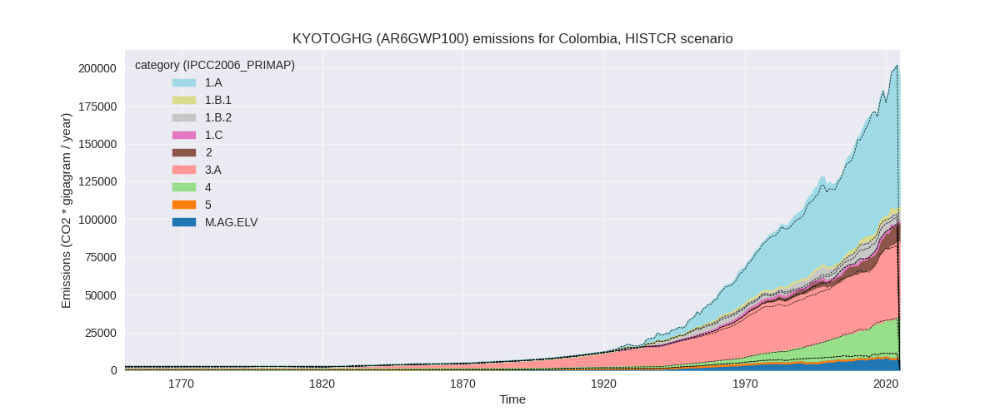
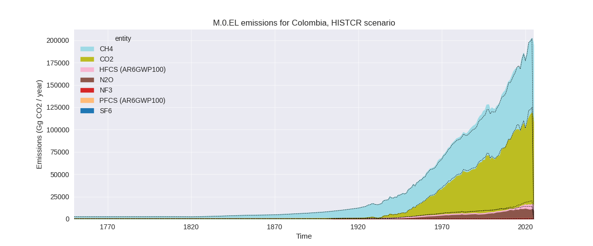
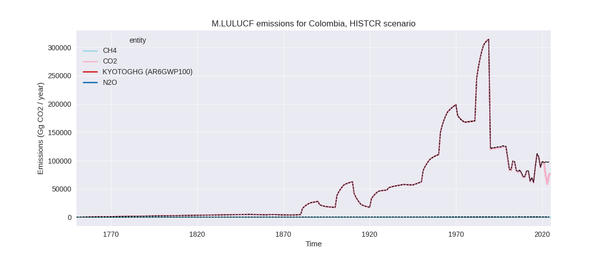
The following figures show the aggregate national total emissions
excluding LULUCF AR6GWP100 for the third party priority scenario. The
dotted lines show the v2.7_final data.
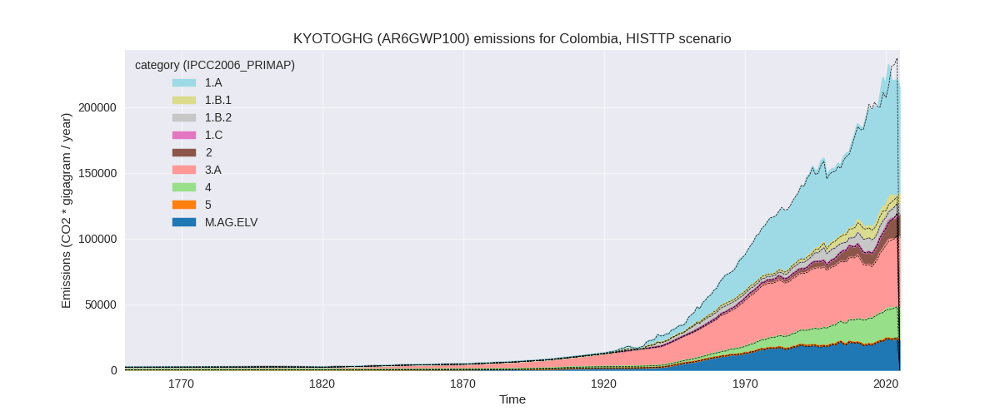
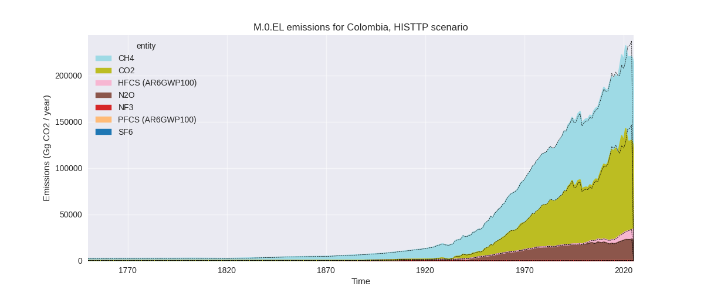
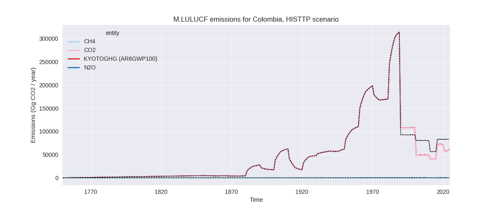
Used country reported data
The changelog with this information is available upon request for
non-commercial customers. Paying commercial customers will be provided
with the information.
Overview over changes
In the country reported priority scenario we have the following
changes for aggregate Kyoto GHG and national total emissions excluding
LULUCF (M.0.EL):
- Emissions in 2024 have changed by 0.1%% (242.39 Gg CO2 / year)
- Emissions in 1990-2024 have changed by 1.6%% (2333.24 Gg CO2 / year)
In the third party priority scenario we have the following changes
for aggregate Kyoto GHG and national total emissions excluding LULUCF
(M.0.EL):
- Emissions in 2024 have changed by -7.1%% (-16793.56 Gg CO2 / year)
- Emissions in 1990-2024 have changed by 0.5%% (851.54 Gg CO2 / year)
Most
important changes per scenario and time frame
In the country reported priority scenario the
following sector-gas combinations have the highest absolute impact on
national total KyotoGHG (AR6GWP100) emissions in 2024
(up to 10 with either at least 0.2% impact on total emissions or at
least 20% change):
- 1: M.AG.ELV, N2O with -3522.54 Gg CO2 / year (-34.4%, -1.7%)
- 2: 1.B.2, CH4 with 3264.71 Gg CO2 / year (125.6%, 1.6%)
- 3: 1.A, CO2 with -1976.98 Gg CO2 / year (-2.1%, -1.0%)
- 4: 3.A, CH4 with 1872.98 Gg CO2 / year (4.0%, 0.9%)
- 5: 4, CH4 with 1620.87 Gg CO2 / year (7.3%, 0.8%)
- 6: 1.B.2, CO2 with -1061.65 Gg CO2 / year (-46.4%, -0.5%)
- 7: 4, CO2 with 898.67 Gg CO2 / year (227.4%, 0.4%)
- 8: 1.A, CH4 with -873.35 Gg CO2 / year (-34.6%, -0.4%)
- 9: 1.B.1, CH4 with 674.57 Gg CO2 / year (41.2%, 0.3%)
- 10: 2, N2O with -588.23 Gg CO2 / year (-77.6%, -0.3%)
In the country reported priority scenario the
following sector-gas combinations have the highest absolute impact on
national total KyotoGHG (AR6GWP100) emissions in
1990-2024 (up to 10 with either at least 0.1% impact on
total emissions or at least 10% change):
- 1: 1.B.2, CH4 with 3608.42 Gg CO2 / year (180.8%, 2.5%)
- 2: M.AG.ELV, N2O with -3032.19 Gg CO2 / year (-35.5%, -2.1%)
- 3: 4, CH4 with 1140.41 Gg CO2 / year (8.0%, 0.8%)
- 4: 3.A, CH4 with 929.73 Gg CO2 / year (2.5%, 0.6%)
- 5: 1.A, CH4 with -614.94 Gg CO2 / year (-26.2%, -0.4%)
- 6: 1.B.2, CO2 with -597.60 Gg CO2 / year (-28.0%, -0.4%)
- 7: 4, CO2 with 548.64 Gg CO2 / year (173.3%, 0.4%)
- 8: 1.B.1, CH4 with 156.42 Gg CO2 / year (6.8%, 0.1%)
- 9: M.AG.ELV, CH4 with 146.31 Gg CO2 / year (26.9%, 0.1%)
- 10: 2, N2O with -72.38 Gg CO2 / year (-14.4%, -0.1%)
In the third party priority scenario the following
sector-gas combinations have the highest absolute impact on national
total KyotoGHG (AR6GWP100) emissions in 2024 (up to 10
with either at least 0.2% impact on total emissions or at least 20%
change):
- 1: 1.A, CO2 with -16831.75 Gg CO2 / year (-16.3%, -7.1%)
- 2: 3.A, CH4 with -2439.72 Gg CO2 / year (-4.6%, -1.0%)
- 3: 1.B.1, CO2 with 1695.84 Gg CO2 / year (79.0%, 0.7%)
- 4: 1.B.2, CH4 with 874.42 Gg CO2 / year (13.0%, 0.4%)
- 5: 4, CH4 with 806.38 Gg CO2 / year (3.8%, 0.3%)
- 6: M.AG.ELV, N2O with -763.86 Gg CO2 / year (-4.1%, -0.3%)
- 7: 1.B.1, CH4 with 666.16 Gg CO2 / year (22.0%, 0.3%)
- 8: 1.B.2, CO2 with -365.39 Gg CO2 / year (-52.5%, -0.2%)
- 9: M.AG.ELV, CO2 with -221.45 Gg CO2 / year (-32.2%, -0.1%)
In the third party priority scenario the following
sector-gas combinations have the highest absolute impact on national
total KyotoGHG (AR6GWP100) emissions in 1990-2024 (up
to 10 with either at least 0.1% impact on total emissions or at least
10% change):
- 1: 1.B.1, CO2 with 1425.95 Gg CO2 / year (169.8%, 0.8%)
- 2: 1.A, CO2 with -551.76 Gg CO2 / year (-0.8%, -0.3%)
- 3: 1.B.2, CO2 with -209.26 Gg CO2 / year (-22.1%, -0.1%)
Notes on data changes
The changelog with this information is available upon request for
non-commercial customers. Paying commercial customers will be provided
with the information.
Changes by sector and gas
For each scenario and time frame the changes are displayed for all
individual sectors and all individual gases. In the sector plot we use
aggregate Kyoto GHGs in AR6GWP100. In the gas plot we usenational total
emissions without LULUCF.
country reported scenario
2024
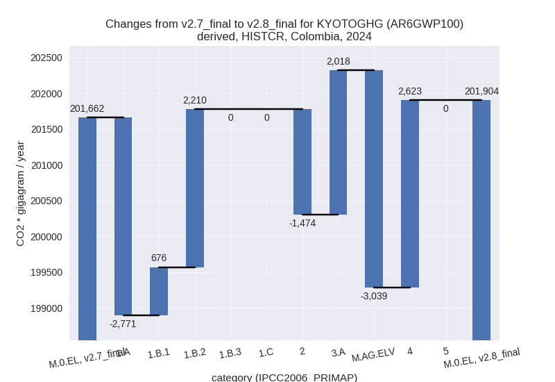
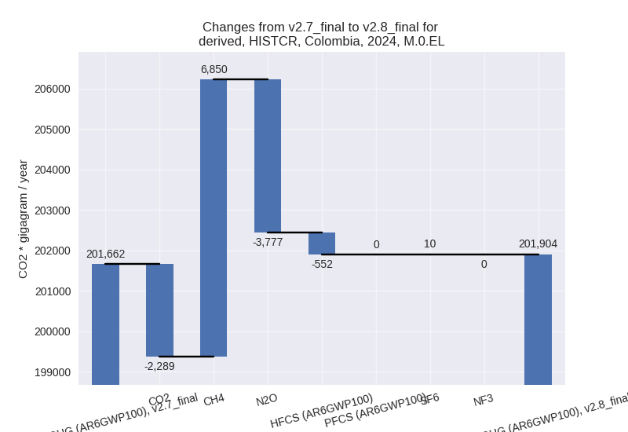
1990-2024
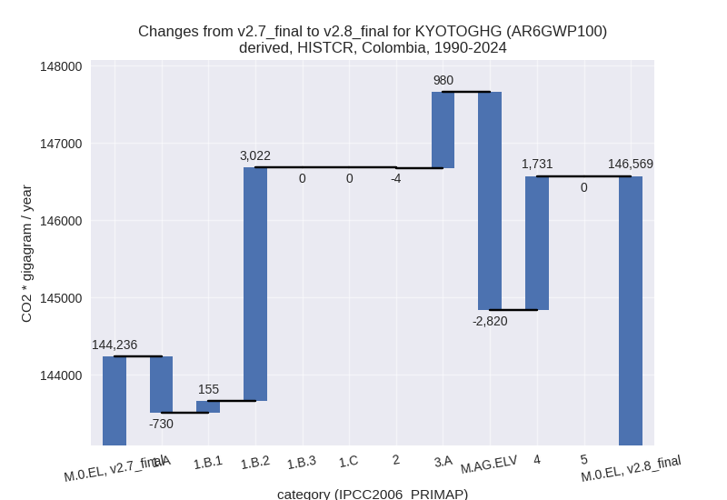
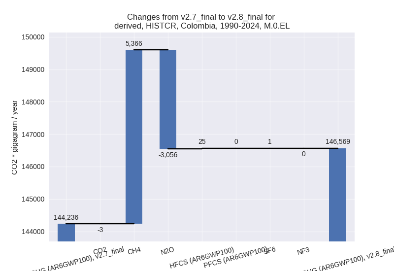
third party scenario
2024
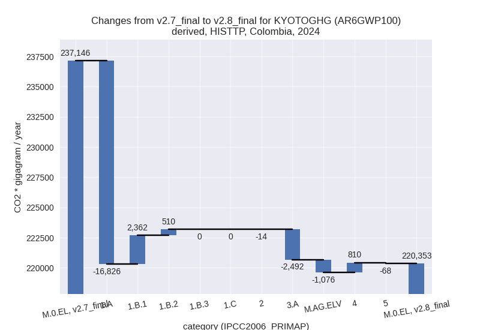
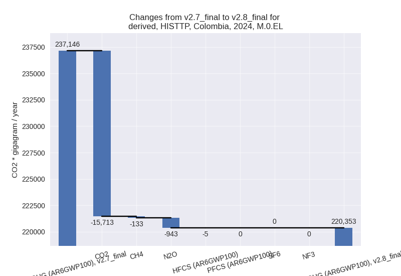
1990-2024
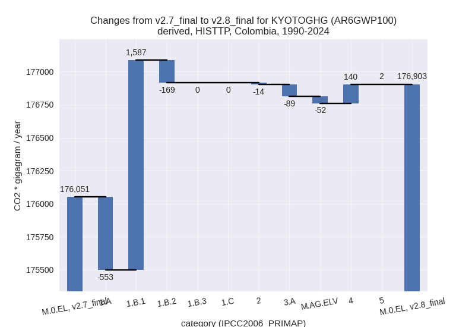
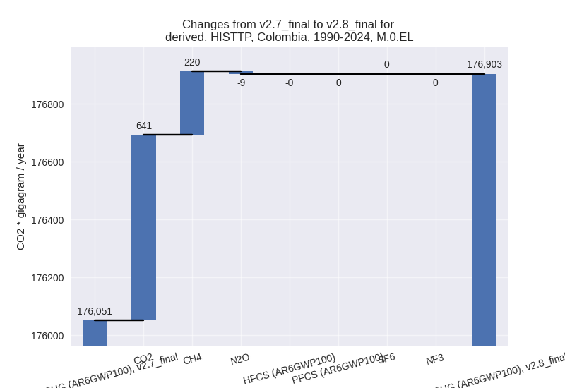
Detailed changes for the
scenarios:
country reported scenario
(HISTCR):
Most important changes
per time frame
For 2024 the following sector-gas combinations have
the highest absolute impact on national total KyotoGHG (AR6GWP100)
emissions in 2024 (up to 20 with either at least 0.2%
impact on total emissions or at least 20% change):
- 1: M.AG.ELV, N2O with -3522.54 Gg CO2 / year (-34.4%), -1.7%)
- 2: 1.B.2, CH4 with 3264.71 Gg CO2 / year (125.6%), 1.6%)
- 3: 1.A, CO2 with -1976.98 Gg CO2 / year (-2.1%), -1.0%)
- 4: 3.A, CH4 with 1872.98 Gg CO2 / year (4.0%), 0.9%)
- 5: 4, CH4 with 1620.87 Gg CO2 / year (7.3%), 0.8%)
- 6: 1.B.2, CO2 with -1061.65 Gg CO2 / year (-46.4%), -0.5%)
- 7: 4, CO2 with 898.67 Gg CO2 / year (227.4%), 0.4%)
- 8: 1.A, CH4 with -873.35 Gg CO2 / year (-34.6%), -0.4%)
- 9: 1.B.1, CH4 with 674.57 Gg CO2 / year (41.2%), 0.3%)
- 10: 2, N2O with -588.23 Gg CO2 / year (-77.6%), -0.3%)
- 11: 2, HFCS (AR6GWP100) with -552.16 Gg CO2 / year (-8.7%), -0.3%)
- 12: M.AG.ELV, CH4 with 289.59 Gg CO2 / year (59.1%), 0.1%)
- 13: M.AG.ELV, CO2 with 193.55 Gg CO2 / year (70.4%), 0.1%)
- 14: 3.A, N2O with 144.59 Gg CO2 / year (20.4%), 0.1%)
- 15: 1.B.2, N2O with 6.77 Gg CO2 / year (88.5%), 0.0%)
For 1990-2024 the following sector-gas combinations
have the highest absolute impact on national total KyotoGHG (AR6GWP100)
emissions in 1990-2024 (up to 20 with either at least
0.1% impact on total emissions or at least 10% change):
- 1: 1.B.2, CH4 with 3608.42 Gg CO2 / year (180.8%), 2.5%)
- 2: M.AG.ELV, N2O with -3032.19 Gg CO2 / year (-35.5%), -2.1%)
- 3: 4, CH4 with 1140.41 Gg CO2 / year (8.0%), 0.8%)
- 4: 3.A, CH4 with 929.73 Gg CO2 / year (2.5%), 0.6%)
- 5: 1.A, CH4 with -614.94 Gg CO2 / year (-26.2%), -0.4%)
- 6: 1.B.2, CO2 with -597.60 Gg CO2 / year (-28.0%), -0.4%)
- 7: 4, CO2 with 548.64 Gg CO2 / year (173.3%), 0.4%)
- 8: 1.B.1, CH4 with 156.42 Gg CO2 / year (6.8%), 0.1%)
- 9: M.AG.ELV, CH4 with 146.31 Gg CO2 / year (26.9%), 0.1%)
- 10: 2, N2O with -72.38 Gg CO2 / year (-14.4%), -0.1%)
- 11: M.AG.ELV, CO2 with 66.15 Gg CO2 / year (26.4%), 0.0%)
- 12: 1.B.2, N2O with 10.74 Gg CO2 / year (127.1%), 0.0%)
- 13: 1.B.1, N2O with -7.80 Gg CO2 / year (-100.0%), -0.0%)
Changes in the main sectors for aggregate KyotoGHG (AR6GWP100)
are
- 1: Total sectoral emissions in 2022 are 100275.18
Gg CO2 / year which is 51.2% of M.0.EL emissions. 2024 Emissions have
changed by 0.1% (115.20 Gg CO2 /
year). 1990-2024 Emissions have changed by 3.3% (2446.24 Gg CO2 / year). For
1990-2024 the changes per gas
are:
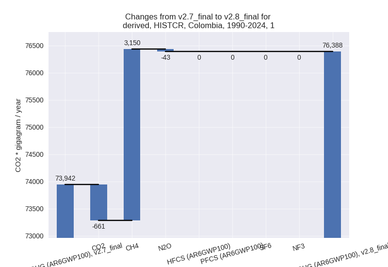
The changes come from the following subsectors:
- 1.A: Total sectoral emissions in 2022 are 89015.60
Gg CO2 / year which is 88.8% of category 1 emissions. 2024 Emissions
have changed by -2.8% (-2770.62 Gg
CO2 / year). 1990-2024 Emissions have changed by -1.1% (-730.08 Gg CO2 / year). For 2024
the changes per gas
are:
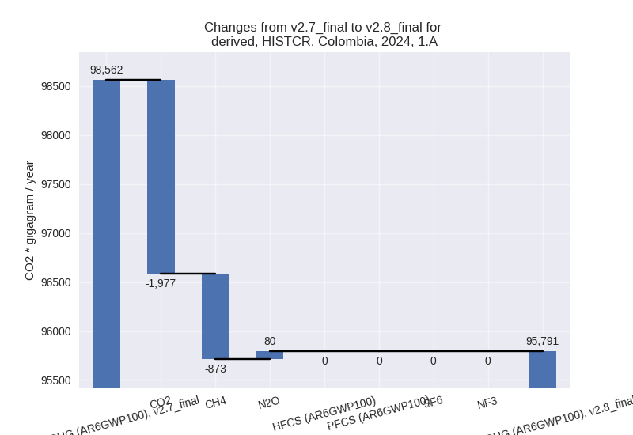
There is no subsector information available in PRIMAP-hist.
- 1.B.1: Total sectoral emissions in 2022 are 3799.93
Gg CO2 / year which is 3.8% of category 1 emissions. 2024 Emissions have
changed by 38.9% (675.99 Gg CO2 /
year). 1990-2024 Emissions have changed by 6.4% (154.76 Gg CO2 / year). For 2024 the
changes per gas
are:
For 1990-2024 the changes per gas
are:
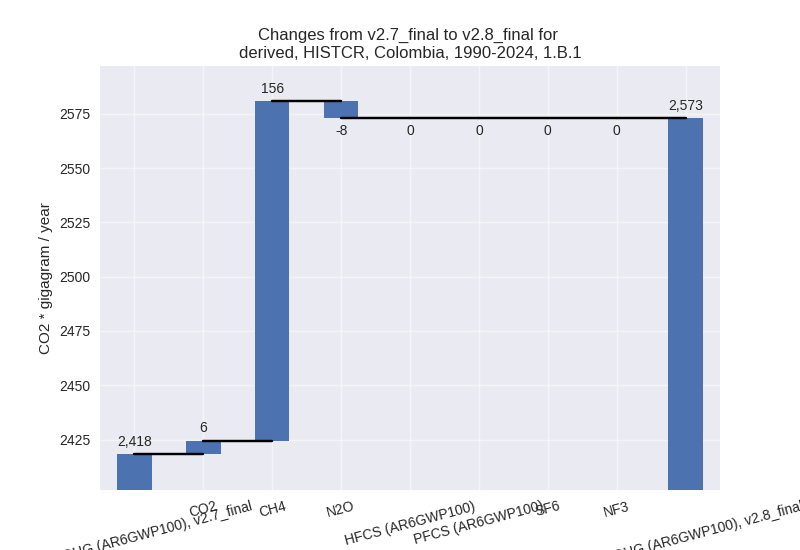
There is no subsector information available in PRIMAP-hist.
- 1.B.2: Total sectoral emissions in 2022 are 7459.65
Gg CO2 / year which is 7.4% of category 1 emissions. 2024 Emissions have
changed by 45.1% (2209.83 Gg CO2 /
year). 1990-2024 Emissions have changed by 73.0% (3021.56 Gg CO2 / year). For 2024
the changes per gas
are:
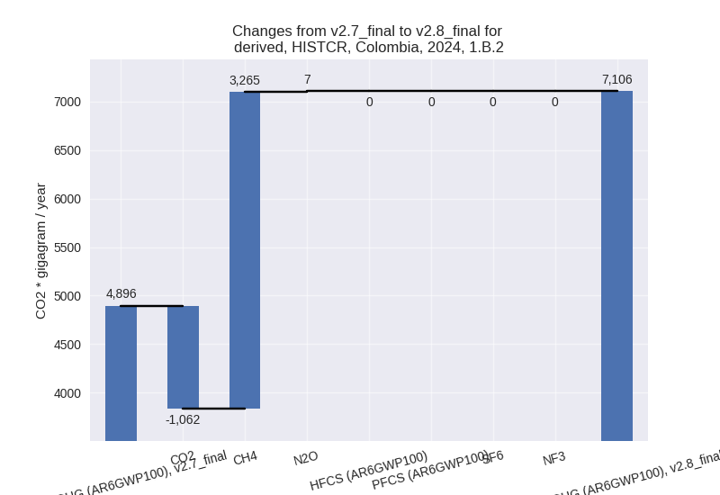
For 1990-2024 the changes per gas
are:
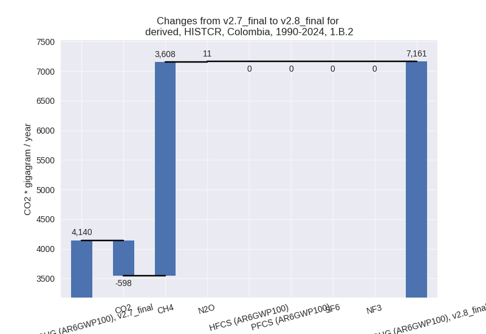
There is no subsector information available in PRIMAP-hist.
- 2: Total sectoral emissions in 2022 are 13607.22 Gg
CO2 / year which is 6.9% of M.0.EL emissions. 2024 Emissions have
changed by -10.5% (-1474.10 Gg CO2 /
year). 1990-2024 Emissions have changed by -0.0% (-3.68 Gg CO2 / year). For 2024 the
changes per gas
are:
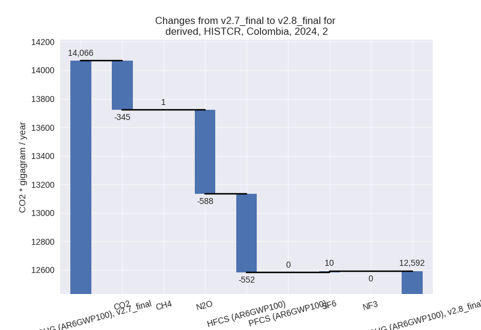
- M.AG: Total sectoral emissions in 2022 are 56637.18
Gg CO2 / year which is 28.9% of M.0.EL emissions. 2024 Emissions have
changed by -1.7% (-1021.84 Gg CO2 /
year). 1990-2024 Emissions have changed by -3.9% (-1840.12 Gg CO2 / year). For
1990-2024 the changes per gas
are:
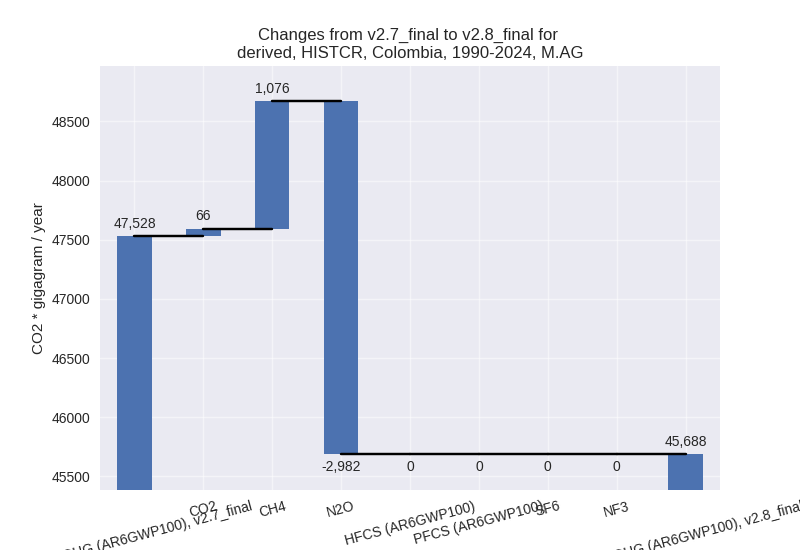
The changes come from the following subsectors:
- 3.A: Total sectoral emissions in 2022 are 49378.50
Gg CO2 / year which is 87.2% of category M.AG emissions. 2024 Emissions
have changed by 4.2% (2017.56 Gg CO2
/ year). 1990-2024 Emissions have changed by 2.6% (979.61 Gg CO2 / year). For 2024 the
changes per gas
are:
For 1990-2024 the changes per gas
are:
There is no subsector information available in PRIMAP-hist.
- M.AG.ELV: Total sectoral emissions in 2022 are
7258.69 Gg CO2 / year which is 12.8% of category M.AG emissions. 2024
Emissions have changed by -27.6%
(-3039.40 Gg CO2 / year). 1990-2024 Emissions have changed by -30.2% (-2819.73 Gg CO2 / year). For 2024
the changes per gas
are:
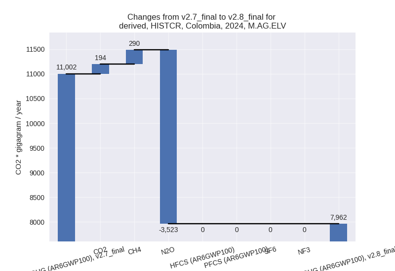
For 1990-2024 the changes per gas
are:
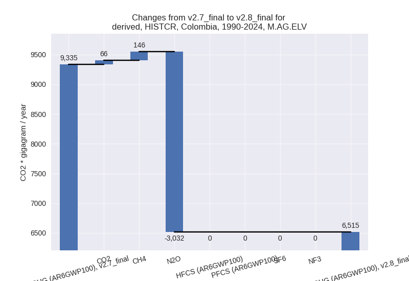
There is no subsector information available in PRIMAP-hist.
- 4: Total sectoral emissions in 2022 are 25306.10 Gg
CO2 / year which is 12.9% of M.0.EL emissions. 2024 Emissions have
changed by 11.3% (2623.13 Gg CO2 /
year). 1990-2024 Emissions have changed by 11.5% (1730.79 Gg CO2 / year). For 2024
the changes per gas
are:
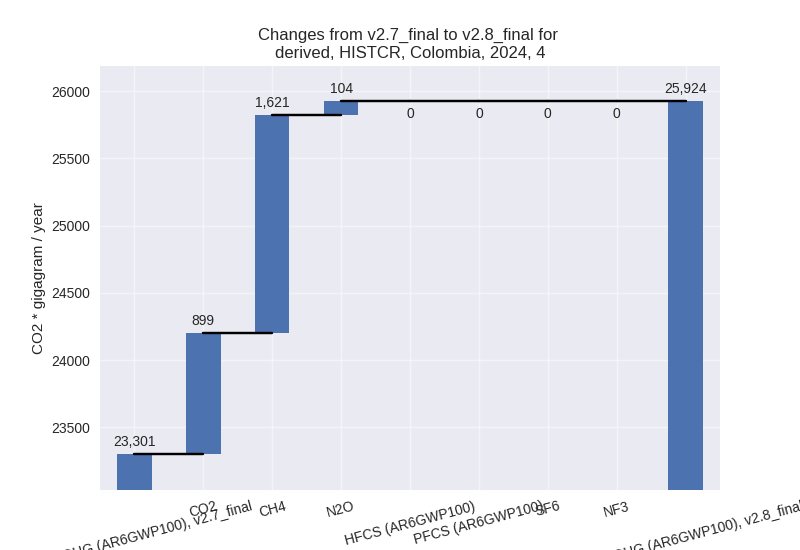
For 1990-2024 the changes per gas
are:
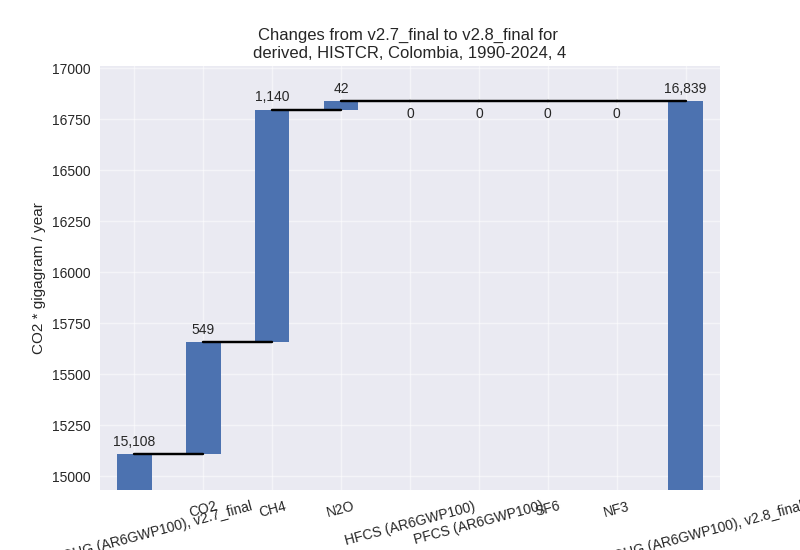
- 5: No data
third party scenario (HISTTP):
Most important changes
per time frame
For 2024 the following sector-gas combinations have
the highest absolute impact on national total KyotoGHG (AR6GWP100)
emissions in 2024 (up to 20 with either at least 0.2%
impact on total emissions or at least 20% change):
- 1: 1.A, CO2 with -16831.75 Gg CO2 / year (-16.3%), -7.1%)
- 2: 3.A, CH4 with -2439.72 Gg CO2 / year (-4.6%), -1.0%)
- 3: 1.B.1, CO2 with 1695.84 Gg CO2 / year (79.0%), 0.7%)
- 4: 1.B.2, CH4 with 874.42 Gg CO2 / year (13.0%), 0.4%)
- 5: 4, CH4 with 806.38 Gg CO2 / year (3.8%), 0.3%)
- 6: M.AG.ELV, N2O with -763.86 Gg CO2 / year (-4.1%), -0.3%)
- 7: 1.B.1, CH4 with 666.16 Gg CO2 / year (22.0%), 0.3%)
- 8: 1.B.2, CO2 with -365.39 Gg CO2 / year (-52.5%), -0.2%)
- 9: M.AG.ELV, CO2 with -221.45 Gg CO2 / year (-32.2%), -0.1%)
- 10: 1.B.2, N2O with 1.14 Gg CO2 / year (33.8%), 0.0%)
For 1990-2024 the following sector-gas combinations
have the highest absolute impact on national total KyotoGHG (AR6GWP100)
emissions in 1990-2024 (up to 20 with either at least
0.1% impact on total emissions or at least 10% change):
- 1: 1.B.1, CO2 with 1425.95 Gg CO2 / year (169.8%), 0.8%)
- 2: 1.A, CO2 with -551.76 Gg CO2 / year (-0.8%), -0.3%)
- 3: 1.B.2, CO2 with -209.26 Gg CO2 / year (-22.1%), -0.1%)
Changes in the main sectors for aggregate KyotoGHG (AR6GWP100)
are
- 1: Total sectoral emissions in 2022 are 104689.36
Gg CO2 / year which is 47.7% of M.0.EL emissions. 2024 Emissions have
changed by -11.8% (-13953.69 Gg CO2
/ year). 1990-2024 Emissions have changed by 1.0% (865.22 Gg CO2 / year). For 2024 the
changes per gas
are:
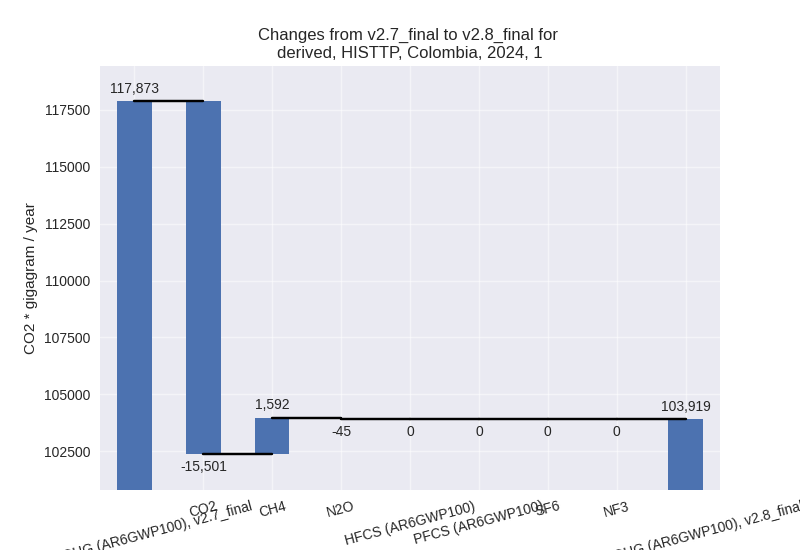
The changes come from the following subsectors:
- 1.A: Total sectoral emissions in 2022 are 86512.96
Gg CO2 / year which is 82.6% of category 1 emissions. 2024 Emissions
have changed by -16.0% (-16825.79 Gg
CO2 / year). 1990-2024 Emissions have changed by -0.8% (-552.83 Gg CO2 / year). For 2024
the changes per gas
are:
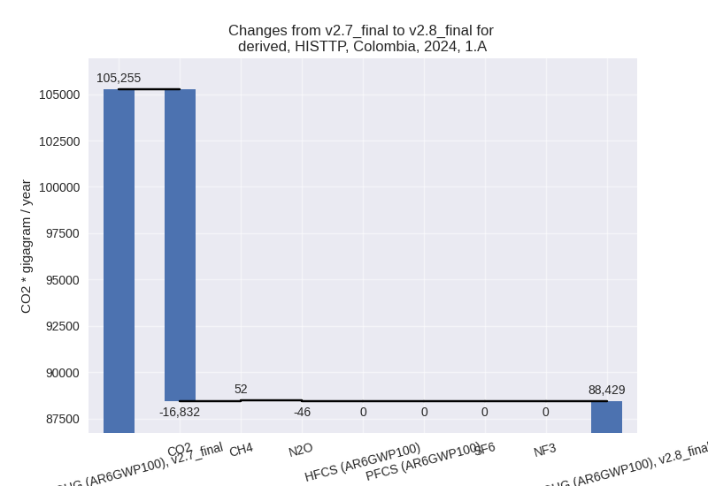
There is no subsector information available in PRIMAP-hist.
- 1.B.1: Total sectoral emissions in 2022 are
10757.46 Gg CO2 / year which is 10.3% of category 1 emissions. 2024
Emissions have changed by 45.6%
(2361.94 Gg CO2 / year). 1990-2024 Emissions have changed by 29.5% (1587.32 Gg CO2 / year). For 2024
the changes per gas
are:
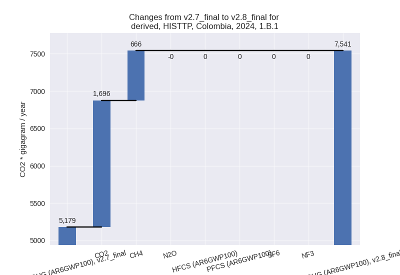
For 1990-2024 the changes per gas
are:
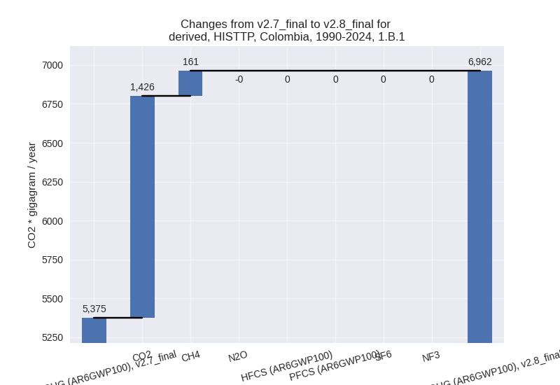
There is no subsector information available in PRIMAP-hist.
- 1.B.2: Total sectoral emissions in 2022 are 7418.94
Gg CO2 / year which is 7.1% of category 1 emissions. 2024 Emissions have
changed by 6.9% (510.16 Gg CO2 /
year). 1990-2024 Emissions have changed by -2.2% (-169.27 Gg CO2 / year). For 2024
the changes per gas
are:
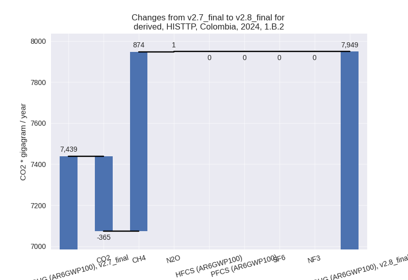
For 1990-2024 the changes per gas
are:
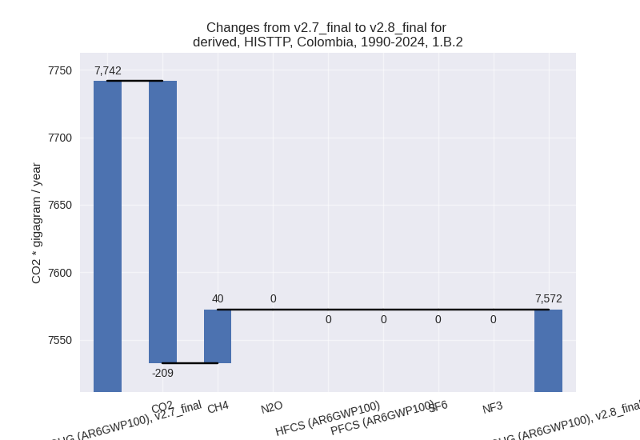
There is no subsector information available in PRIMAP-hist.
- 2: Total sectoral emissions in 2022 are 15517.00 Gg
CO2 / year which is 7.1% of M.0.EL emissions. 2024 Emissions have
changed by -0.1% (-14.08 Gg CO2 /
year). 1990-2024 Emissions have changed by -0.2% (-14.18 Gg CO2 / year).
- M.AG: Total sectoral emissions in 2022 are 75294.65
Gg CO2 / year which is 34.3% of M.0.EL emissions. 2024 Emissions have
changed by -4.5% (-3567.27 Gg CO2 /
year). 1990-2024 Emissions have changed by -0.2% (-141.38 Gg CO2 / year). For 2024
the changes per gas
are:
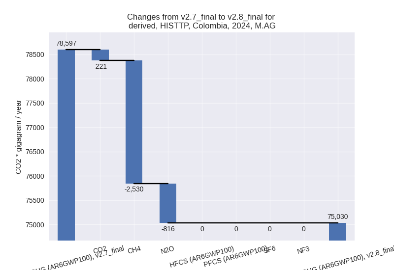
The changes come from the following subsectors:
- 3.A: Total sectoral emissions in 2022 are 52423.59
Gg CO2 / year which is 69.6% of category M.AG emissions. 2024 Emissions
have changed by -4.6% (-2491.58 Gg
CO2 / year). 1990-2024 Emissions have changed by -0.2% (-89.21 Gg CO2 / year). For 2024 the
changes per gas
are:
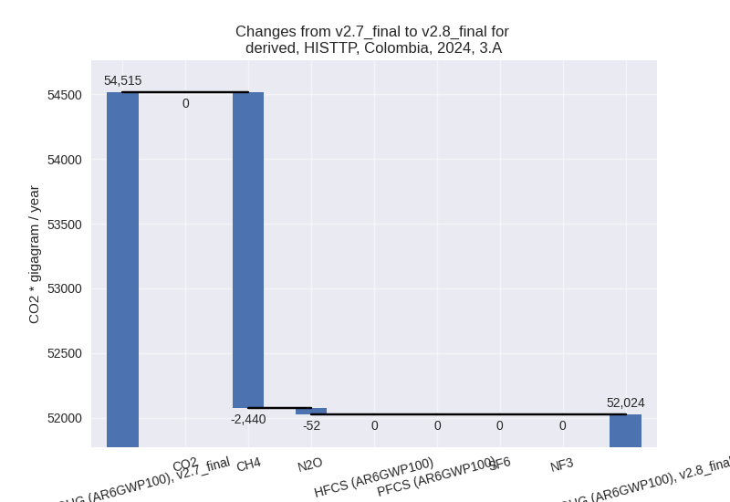
There is no subsector information available in PRIMAP-hist.
- M.AG.ELV: Total sectoral emissions in 2022 are
22871.06 Gg CO2 / year which is 30.4% of category M.AG emissions. 2024
Emissions have changed by -4.5%
(-1075.70 Gg CO2 / year). 1990-2024 Emissions have changed by -0.3% (-52.17 Gg CO2 / year). For 2024 the
changes per gas
are:
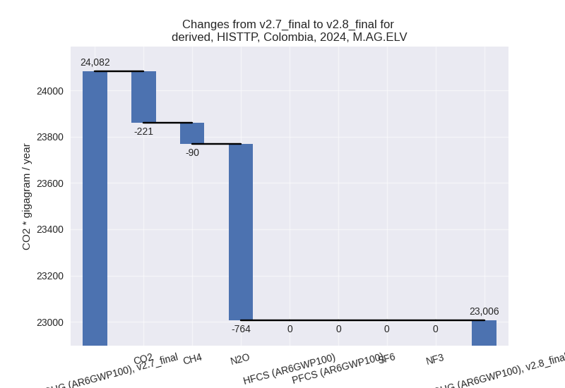
There is no subsector information available in PRIMAP-hist.
- 4: Total sectoral emissions in 2022 are 23396.76 Gg
CO2 / year which is 10.7% of M.0.EL emissions. 2024 Emissions have
changed by 3.5% (809.55 Gg CO2 /
year). 1990-2024 Emissions have changed by 0.8% (140.31 Gg CO2 / year). For 2024 the
changes per gas
are:
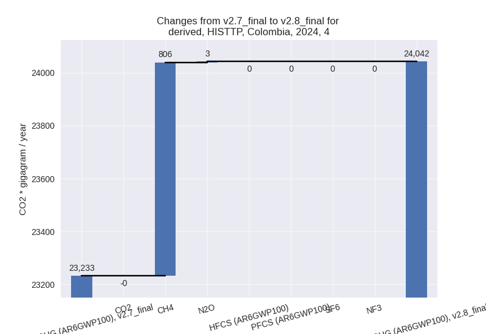
- 5: Total sectoral emissions in 2022 are 784.00 Gg
CO2 / year which is 0.4% of M.0.EL emissions. 2024 Emissions have
changed by -8.0% (-68.07 Gg CO2 /
year). 1990-2024 Emissions have changed by 0.2% (1.57 Gg CO2 / year). For 2024 the
changes per gas
are:
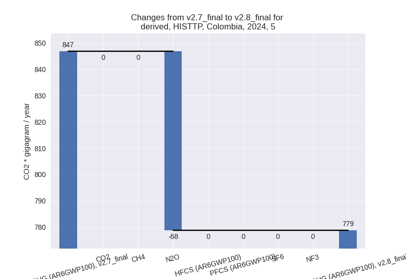